não existem quatro operações — existem duas, e cada uma tem um desfazedor
A escola ensina quatro contas: somar, subtrair, multiplicar e dividir. É uma lista prática, e é falsa como estrutura. Subtrair é somar; dividir é multiplicar. O que muda em cada caso é com quem se soma e por quem se multiplica.
Este seminário não pertence a nenhum dos dois arcos: é o chão dos dois. Sai daqui com a aritmética arrumada, a contagem como origem das operações, e a letra pronta para receber tudo isso.
Autor · Mateus Felipe Alkimim Pereira
Coautora · Sara Catiele Nogueira Pereira
Orientador · Rosivaldo Antônio Gohnan
Nada aparece adiante sem estar nesta folha. Se um símbolo não está aqui, ele será apresentado no momento em que for usado.
| \(a + b\) | "a mais b" — a soma |
| \(a \cdot b\) | "a vezes b" — o produto |
| \(-a\) | "o oposto de a" — o que somado a \(a\) dá zero |
| \(a^{-1}\) | "o inverso de a" — o que multiplicado por \(a\) dá um |
| \(\mathbb{N}\) | "ene" — os números de contar: 0, 1, 2, 3, … |
| \(\mathbb{Z}\) | "zê" — os inteiros, com os negativos |
| \(\mathbb{Q}\) | "quê" — os racionais, as frações |
| \(|A|\) | "tamanho de A" — quantos elementos o conjunto A tem |
O traço em \(-a\) e o expoente em \(a^{-1}\) não são contas para fazer: são nomes. \(-a\) é o nome de um número, e \(a^{-1}\) é o nome de outro. Quando \(a\) vale 3, o primeiro se chama \(-3\) e o segundo se chama um terço.
E cuidado com um hábito da escola: \(-a\) não quer dizer "número negativo". Se \(a\) já for negativo, \(-a\) é positivo. O nome diz "o que desfaz a soma com \(a\)", e nada mais.
\(a^{-1}\) lê-se "a elevado a menos um", ou simplesmente "o inverso de a".
Um conjunto é uma coleção de coisas. As coisas dentro dele são seus elementos, e a pergunta mais simples que se faz a um conjunto é: quantos são?
Para conjuntos pequenos, conta-se no dedo. O assunto começa quando contar no dedo deixa de ser possível — e a pergunta continua tendo resposta exata.
"o tamanho de A".
Uma senha de quatro dígitos tem dez mil possibilidades. Ninguém listou as dez mil para descobrir isso — e é justamente por não ter listado que a conta serve para alguma coisa. Contar sem listar é o que esta estação ensina, e as duas operações da aritmética nascem dela.
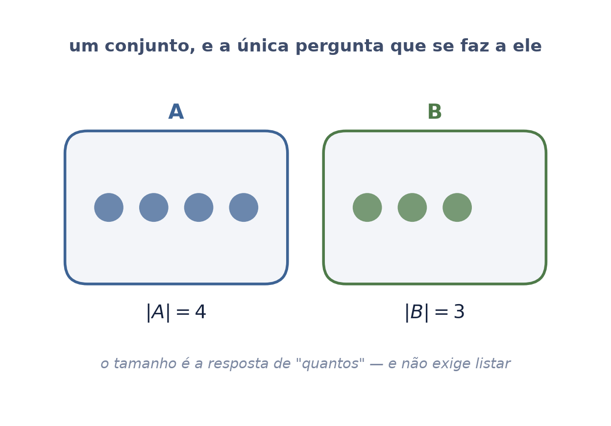
Se dois conjuntos não têm nenhum elemento em comum, o tamanho da união é a soma dos tamanhos. É o princípio aditivo.
"o tamanho de A união B é o tamanho de A mais o tamanho de B".
A soma não foi inventada como conta. Ela é o nome que se dá ao resultado de juntar coisas separadas e contar de novo.
A condição "nada se repete" carrega o peso todo. Numa turma com 12 pessoas que jogam futebol e 9 que jogam vôlei, não há 21 pessoas: há 21 menos quem joga os dois. Quando os conjuntos se cruzam, a soma simples mente — e o conserto disso é assunto da contagem, no episódio G1.
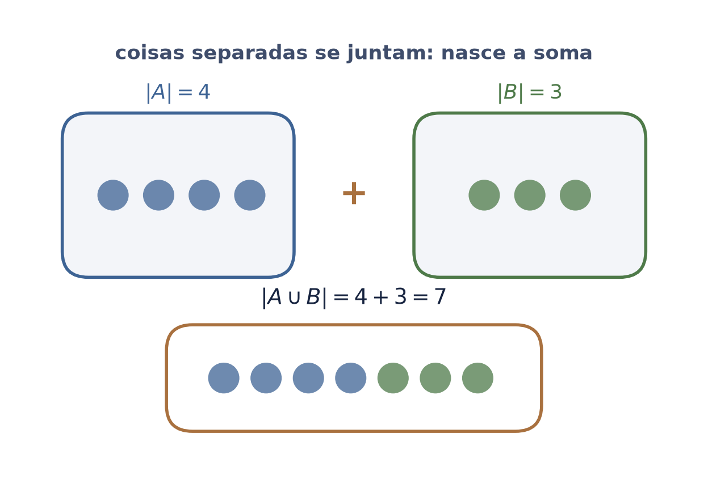
Agora não se junta: combina-se. Se a primeira escolha tem \(m\) opções e, para cada uma delas, a segunda tem \(n\), o total de combinações é \(m \cdot n\). É o princípio multiplicativo.
"o tamanho de A vezes B é o tamanho de A vezes o tamanho de B".
Três camisas e quatro calças dão doze roupas. Ninguém precisa vestir as doze para saber que são doze.
Repare no que aconteceu: as duas operações da aritmética apareceram respondendo a duas perguntas diferentes sobre coisas — quantos são ao todo, e de quantos jeitos posso combinar. Não são duas contas que alguém escolheu ensinar: são duas perguntas que o mundo faz.
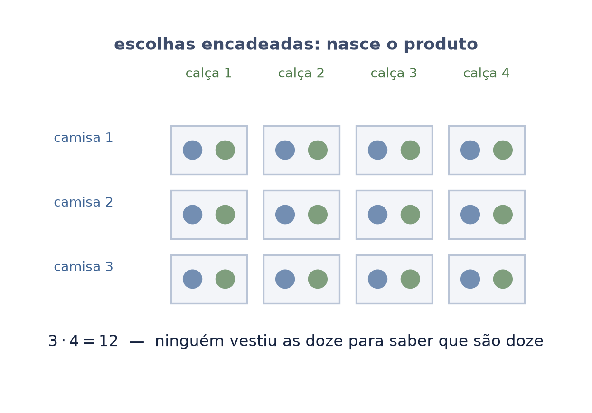
Enquanto se conta coisa, multiplicar parece somar repetido: \(3 \cdot 4\) é somar 4 três vezes. A imagem funciona, e por isso ela é ensinada.
Ela quebra assim que os números deixam de contar coisas:
Não existe repetir duas vírgula cinco vezes. A conta continua tendo resposta — o que acabou foi a explicação.
Isto está escrito aqui de propósito, e cedo. Uma imagem que ajuda no começo e quebra depois deixa um buraco silencioso: o aluno não percebe que ela caiu, continua usando, e conclui que não entendeu a matéria — quando o que falhou foi a muleta.
O que não quebra é a estrutura: soma e produto continuam sendo duas operações com as mesmas propriedades, valendo para qualquer número. É nela que este seminário se apoia daqui em diante.
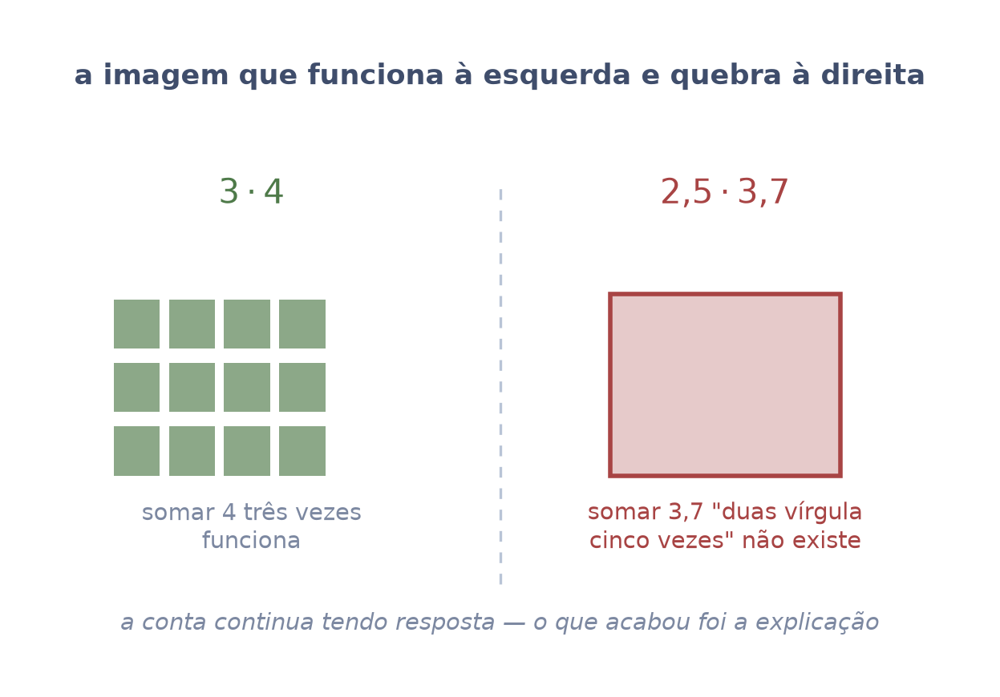
Toda operação levanta a pergunta contrária. Somei alguma coisa a 5 e cheguei em 12: o que somei? Multipliquei alguma coisa por 3 e cheguei em 12: por quanto multipliquei?
A escola dá um nome novo para cada uma dessas perguntas — subtração e divisão — e passa a ensinar quatro contas. O que vem a seguir mostra que não são contas novas: são a mesma operação, aplicada a outro número.
Repare que a pergunta contrária é de um tipo diferente da operação. Somar é fazer; desfazer é procurar. E procurar tem uma resposta só quando existe um número que serve — o que nem sempre é verdade, e é disso que esta estação vive.
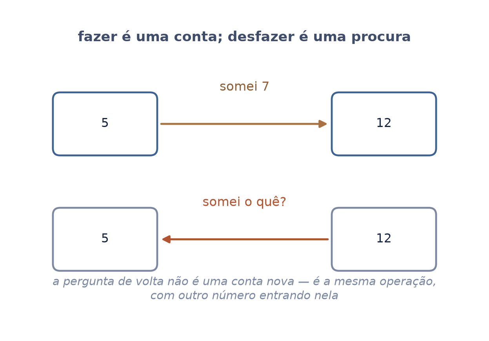
Para cada número \(a\) existe outro, chamado oposto de \(a\) e escrito \(-a\), com uma propriedade só:
"a mais o oposto de a é zero".
Com ele, a subtração some como operação própria:
\(7 - 3\) é \(7 + (-3)\). Não há uma segunda conta: há a soma, e um número diferente entrando nela.
Cuidado com uma frase que quase todo mundo diz e que está errada: "subtrair é somar números de sinais opostos".
Não é. Veja: \(5 - (-3) = 5 + 3\). Os dois números que estão sendo somados aqui têm o mesmo sinal, e ainda assim isto é uma subtração. O que se soma não é "um número de sinal contrário" — é o oposto do segundo, seja ele qual for.
A diferença parece pequena e é ela que faz a regra funcionar em todos os casos em vez de na maioria deles.
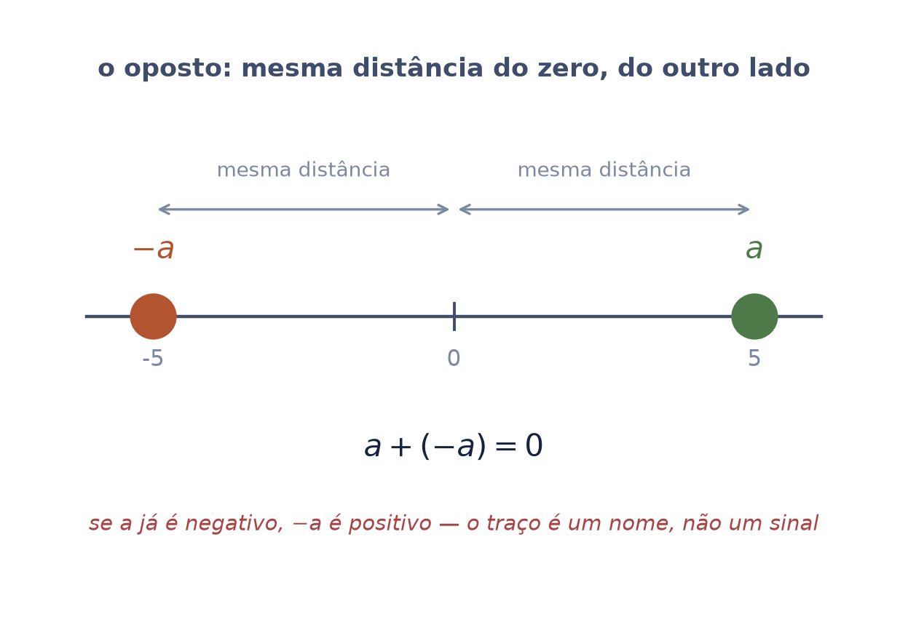
Nos números de contar, \(\mathbb{N}\), a conta \(3 - 5\) não tem resposta. Não é que a resposta seja difícil: ela não existe ali. Não há como tirar cinco coisas de um monte de três.
O oposto de 3 não mora em \(\mathbb{N}\). Para que ele exista, o conjunto teve de crescer:
"ene está contido em zê".
Vale inverter a frase, porque é assim que ela ensina mais: os números negativos não foram inventados para representar dívida ou temperatura. Eles foram inventados para que toda subtração tenha resposta — ou seja, para que a subtração possa deixar de existir como operação separada.
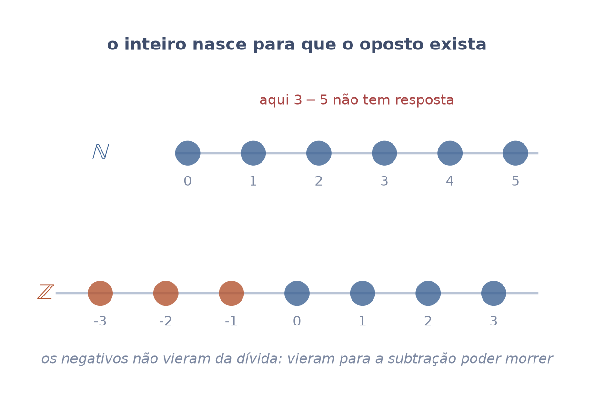
A multiplicação tem o mesmo arranjo. Para cada número \(a\), com uma exceção que vem na folha seguinte, existe o inverso de \(a\), escrito \(a^{-1}\):
"a vezes o inverso de a é um".
E a divisão some do mesmo jeito que a subtração sumiu:
\(12 \div 4\) é \(12 \cdot \frac{1}{4}\).
Note a simetria, porque ela é o argumento inteiro deste seminário:
a soma tem o zero como elemento neutro, e o oposto como desfazedor. O produto tem o um como elemento neutro, e o inverso como desfazedor. São duas operações com a mesma arquitetura, e é por isso que tudo o que se aprende de uma se aproveita na outra.
| neutro da soma | \(a + 0 = a\) |
| neutro do produto | \(a \cdot 1 = a\) |
| desfaz a soma | \(a + (-a) = 0\) |
| desfaz o produto | \(a \cdot a^{-1} = 1\) |
Nos inteiros, \(3 \div 2\) não tem resposta. O inverso de 3 não é um inteiro — não existe número inteiro que multiplicado por 3 dê 1.
É a mesma história contada uma segunda vez, e é por isso que ela convence: cada conjunto numérico novo aparece porque uma pergunta legítima ficou sem resposta no anterior.
Duas invenções, dois desfazedores:
\(\mathbb{Z}\) existe para que a subtração possa morrer. \(\mathbb{Q}\) existe para que a divisão possa morrer. Depois dos dois, sobram exatamente duas operações — que é onde este seminário queria chegar.
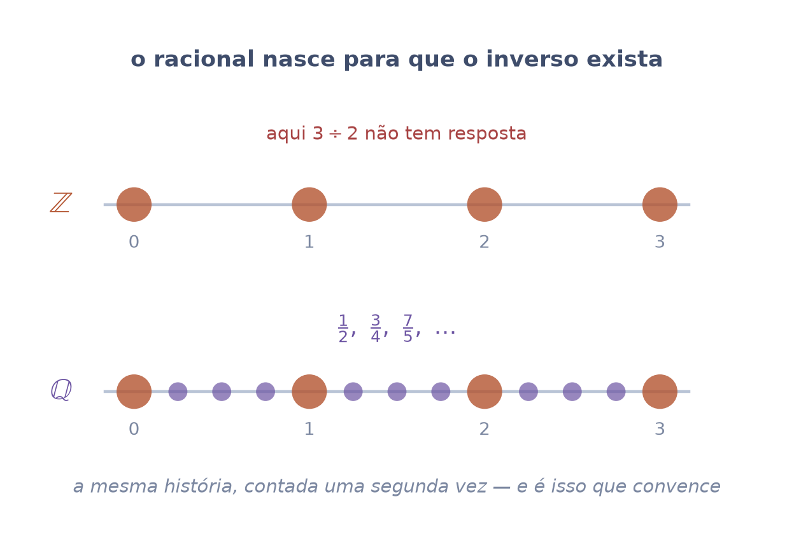
As duas operações são gêmeas em quase tudo. Em um ponto, não:
Não existe número que multiplicado por zero dê 1 — multiplicar por zero sempre dá zero. Logo, \(0^{-1}\) não existe.
E como dividir é multiplicar pelo inverso, dividir por zero seria multiplicar por um número que não existe.
"Não se divide por zero" deixa de ser uma regra que alguém decidiu, e vira uma ausência: não há proibição nenhuma, há um número faltando. Ninguém proíbe você de escrever o nome do rei da França — é que não há rei.
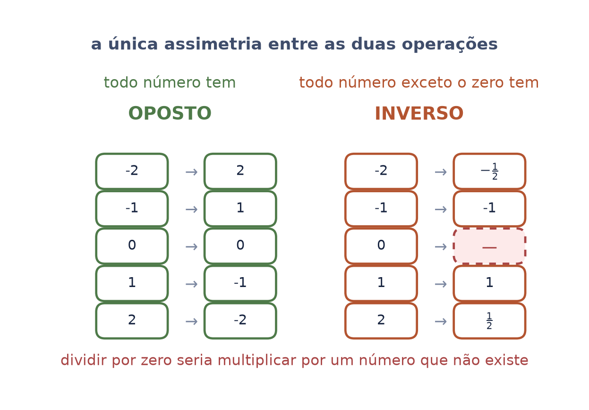
Volte à primeira estação. Uma senha de 4 dígitos: cada posição tem 10 opções, e as escolhas são encadeadas. Pelo princípio multiplicativo:
"dez elevado a quatro".
Quando o mesmo número se repete no produto, escreve-se assim. A potência é o terceiro andar: a soma junta, o produto combina, a potência combina o mesmo muitas vezes.
É a mesma pergunta de contagem da estação 1, feita a um caso particular. Por isso a potência não é um assunto novo que aparece do nada no meio da aritmética: ela é a terceira resposta a "quantos são", e nasce onde as outras duas nasceram.
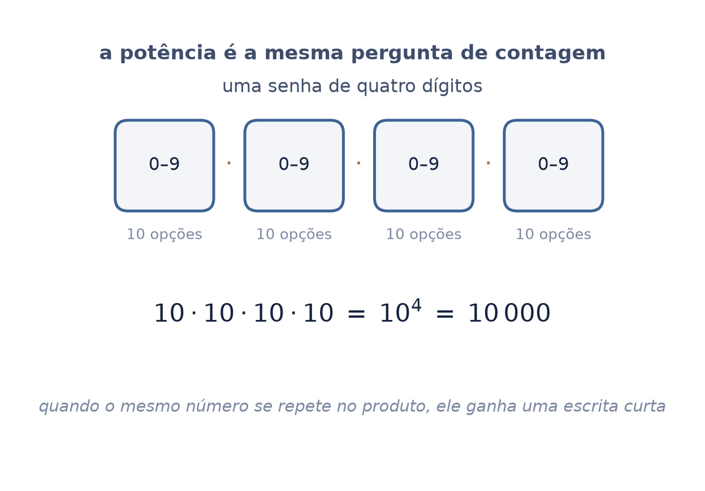
Soma e produto não se importam com a ordem:
Isso se chama ser comutativo. A potência não é:
A base e o expoente fazem trabalhos diferentes. Trocar os dois de lugar muda o resultado.
Guarde este fato: ele parece um detalhe curioso e é a causa de tudo o que vem na próxima folha. Uma operação que trata seus dois números de maneiras diferentes precisa de duas perguntas contrárias, não de uma.
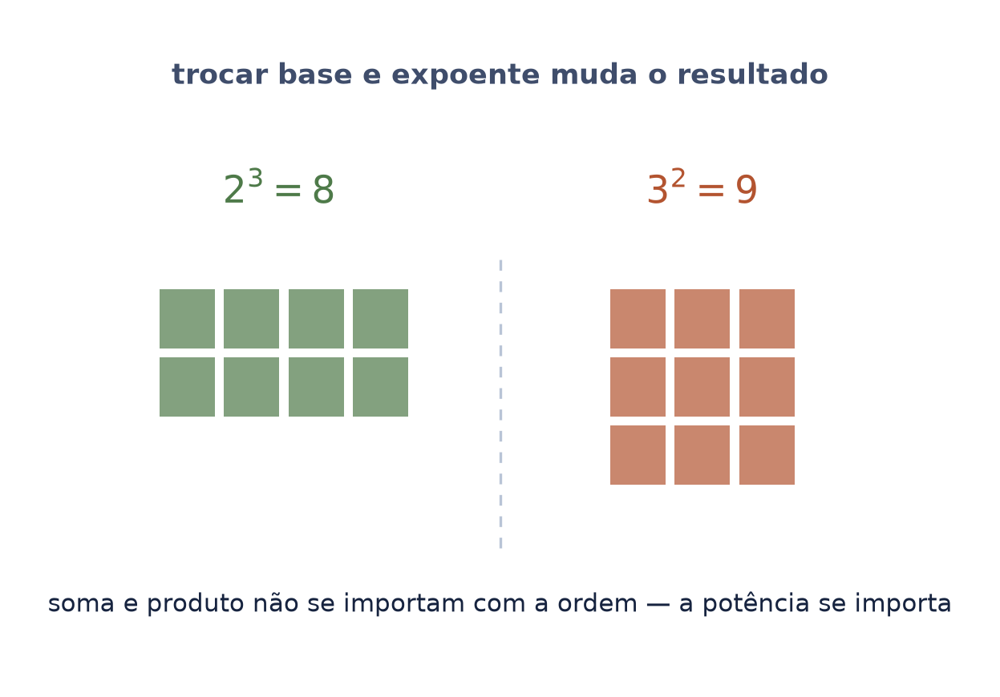
Em \(2^3 = 8\) há três números. Esconda um de cada vez e veja o que cada pergunta pede:
| \(2^3 = \;?\) | é a potência: dá o resultado |
| \(?^3 = 8\) | é a raiz: acha a base |
| \(2^? = 8\) | é o logaritmo: acha o expoente |
o segundo lê-se "raiz cúbica de 8"; o terceiro, "logaritmo de 8 na base 2".
Soma e produto são comutativos, então cada um tem uma inversa. A potência não é, então tem duas.
Este é o motivo de o logaritmo existir, e ele não tem nada de misterioso: alguém escondeu o expoente e perguntou qual era.
Na escola o logaritmo costuma aparecer muito depois, num capítulo próprio, como se fosse um assunto avançado sem parentesco com o resto. Ele é o irmão da raiz — os dois desfazem a mesma operação, cada um por um lado.
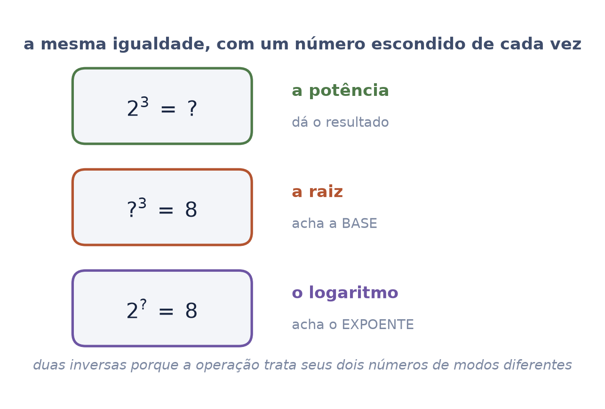
O logaritmo de \(c\) na base \(b\) é o expoente que falta:
"logaritmo de cê na base bê é igual a a".
São a mesma frase escrita de dois jeitos. Ler uma e escrever a outra é o exercício inteiro.
| \(\log_2 8 = 3\) | porque \(2^3 = 8\) |
| \(\log_{10} 1000 = 3\) | porque \(10^3 = 1000\) |
| \(\log_2 1 = 0\) | porque \(2^0 = 1\) |
Onde isto aparece: sempre que a pergunta for "quantas vezes preciso dobrar?". Um valor que dobra a cada período, e a pergunta de quantos períodos até chegar em certo ponto, é um logaritmo — e ninguém precisa chamá-lo pelo nome para estar usando.
Ele aparece de novo mais adiante na série, com o limite por baixo, e aí muda de tamanho. Aqui ele é o que é agora: uma operação, a segunda inversa da potência, e o lugar dela é este.
Até aqui tudo foi dito com números. Mas cada frase valia para todos eles:
A letra não é um número desconhecido esperando para ser descoberto. Ela é qualquer número, e é isso que permite dizer numa linha o que levaria infinitas.
É a diferença entre dizer "3 mais 5 é o mesmo que 5 mais 3", e depois repetir para outro par, e outro — e dizer \(a + b = b + a\), que resolve todos de uma vez, inclusive os que ninguém escreveu.
Quando a letra aparece numa equação a resolver, ela tem outro papel: ali é um valor específico que ainda não se sabe. Mesmo símbolo, dois trabalhos — e vale saber qual dos dois está em curso.
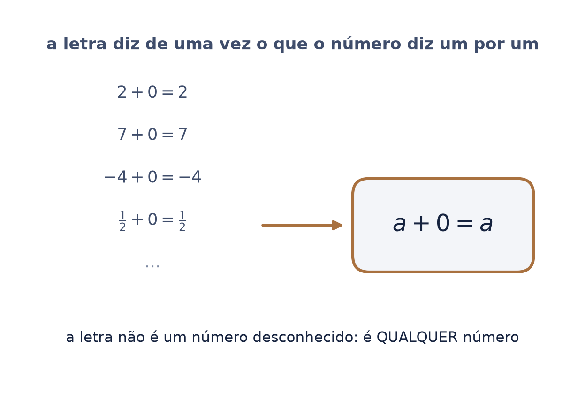
A letra não traz regras novas. Ela obedece às mesmas três propriedades que os números já obedeciam:
| comutativa | \(a + b = b + a\) · \(a \cdot b = b \cdot a\) |
| associativa | \((a + b) + c = a + (b + c)\) |
| distributiva | \(a \cdot (b + c) = a \cdot b + a \cdot c\) |
A distributiva é a única das três que envolve as duas operações ao mesmo tempo — e é por isso que ela é a mais poderosa.
Toda a "álgebra" do ensino básico — abrir parênteses, fatorar, juntar termos semelhantes — é essas três propriedades sendo usadas. Não há uma quarta guardada em algum lugar.
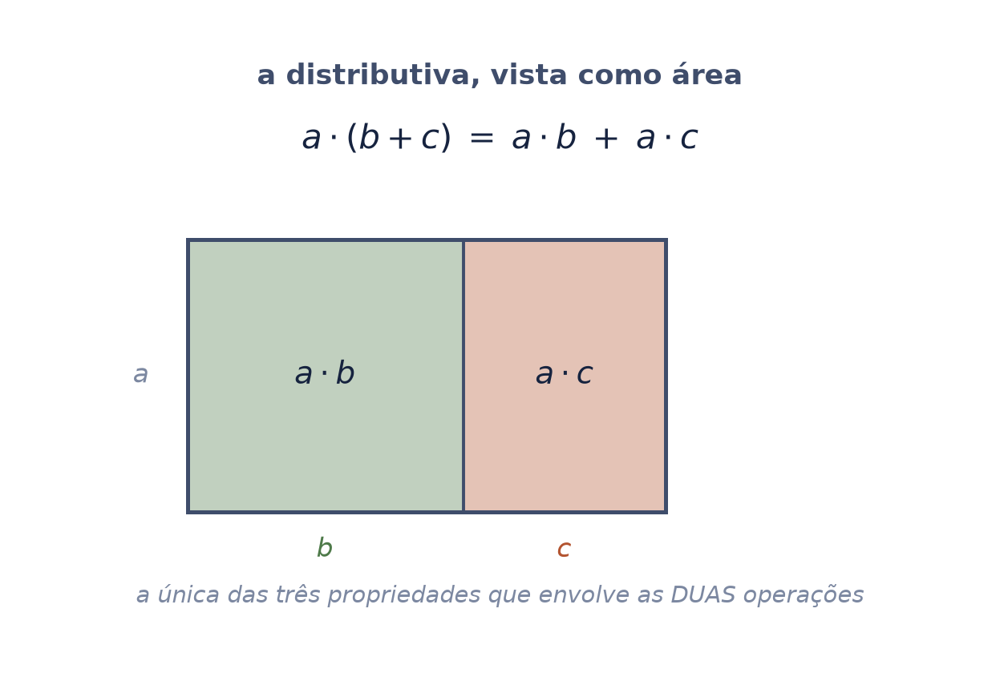
A regra mais decorada da escola é uma consequência, e cabe em três linhas. Comece pelo que já se sabe: \(1 + (-1) = 0\). Multiplique os dois lados por \(-1\):
Agora abra o lado esquerdo pela distributiva:
Se somado a \(-1\) o resultado é zero, então \((-1) \cdot (-1)\) é o oposto de \(-1\), que é \(1\).
Ninguém escolheu que menos com menos desse mais. Essa é a única resposta possível se a distributiva continuar valendo com números negativos — e ela precisa continuar valendo, senão os inteiros seriam um conjunto onde a álgebra deixa de funcionar.
É a diferença entre uma regra e um teorema: a regra você decora e esquece; o teorema você reconstrói quando esquecer.
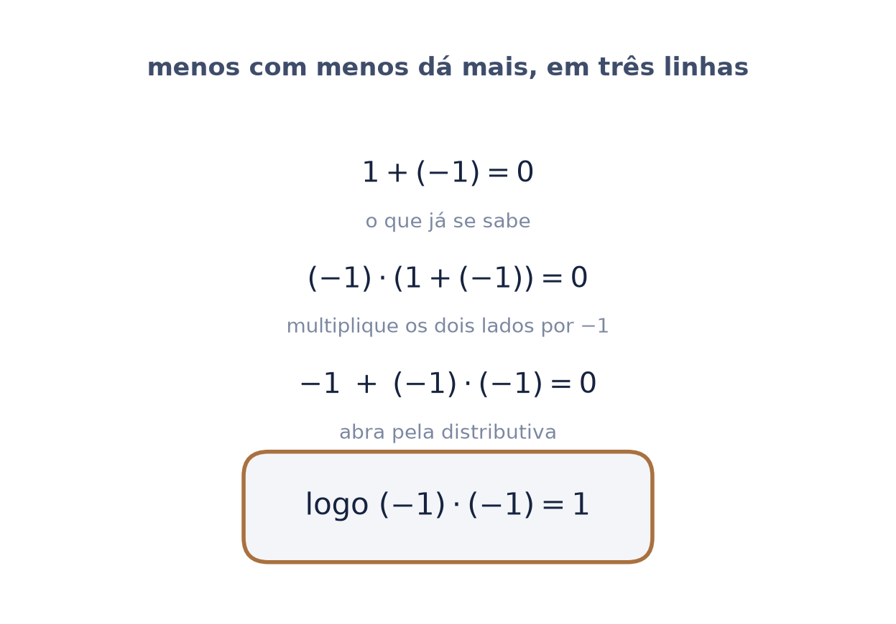
| duas operações | soma e produto — e nada mais |
| dois desfazedores | o oposto e o inverso |
| duas invenções | \(\mathbb{Z}\) para o oposto existir, \(\mathbb{Q}\) para o inverso |
| uma ausência | o zero não tem inverso — daí a divisão por zero |
| um terceiro andar | a potência, com duas inversas: raiz e logaritmo |
| uma letra | que herda três propriedades e nenhuma regra nova |
Daqui a série se abre em dois caminhos que não dependem um do outro. Os dois cobram esta folha, e só esta.
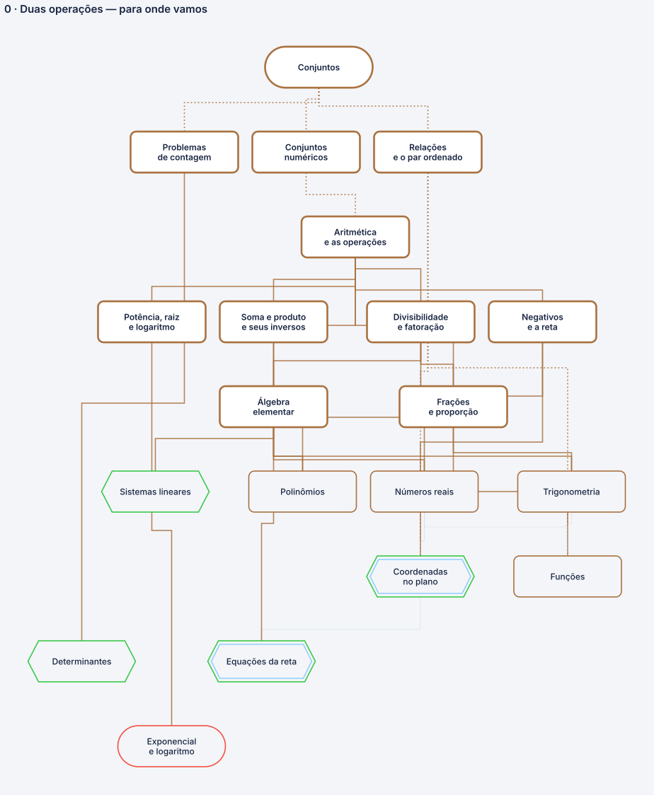
A tese deste seminário — que não existem quatro operações, e sim duas com seus desfazedores — é a estrutura de corpo, que a álgebra abstrata formaliza. O recorte, a ordem das estações e a escolha de chegar às operações pela contagem são do autor.
A frase que abre a estação 2 nasceu de uma orientação acadêmica registrada em 2026-08-25, e foi corrigida na formulação: o que se soma não é "um número de sinal oposto", é o oposto do segundo número.
O argumento das duas inversas da potência — raiz para a base, logaritmo para o expoente, porque a operação não é comutativa — é construção do autor sobre a mesma orientação.
O mapa de pré-requisitos que abre e fecha este seminário é público: mateusalkimim.github.io/math-prerequisite-map. Cada seta dele declara de onde veio.
Seminário 0 da série Um curso de visão computacional e geometria da imagem. É o chão dos dois arcos: nem o GAAL nem o cálculo se sustentam sem ele, e nenhum dos dois se sustenta no outro.
Autoria e composição: Mateus Felipe Alkimim Pereira, com Sara Catiele Nogueira Pereira (coautora); orientação de Rosivaldo Antônio Gohnan. Sob a norma de composição, a norma de notação e a norma de diagramas da Hipátia.